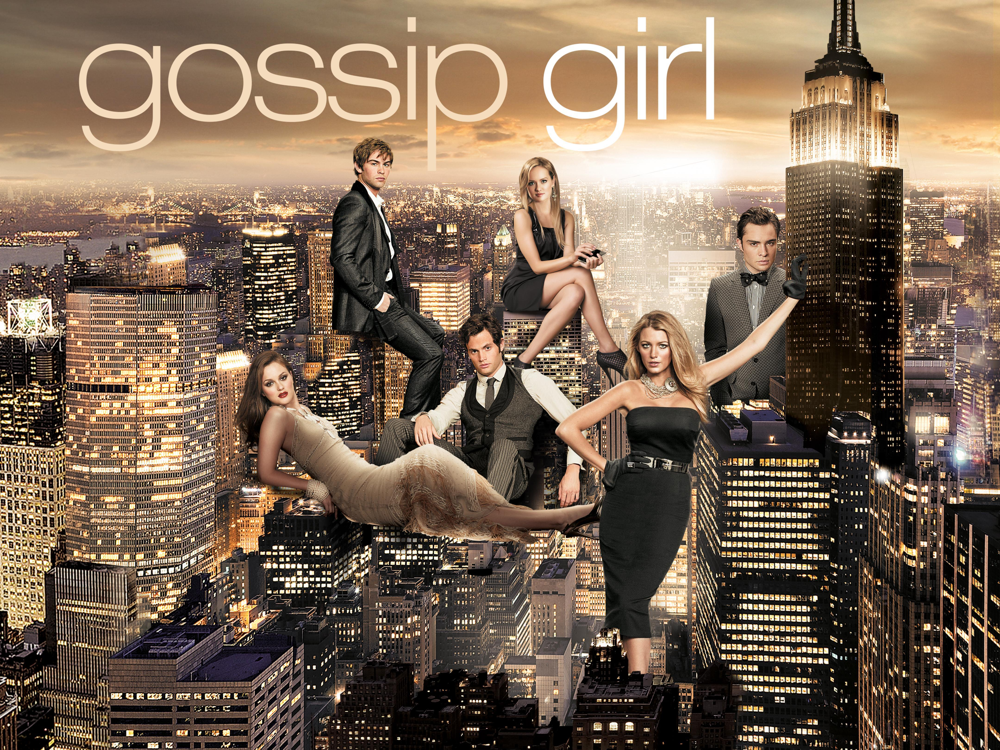

My favorite TV show is the 2002 drama Gossip Girl. I have watched this show 4 times since the first time I watched it, and it includes six seasons. It is about a group of rich high schoolers from Manhattan's Upper East Side who have all their scandals posted anonymously online. I love how it involves drama, friendship, and mystery. I really enjoy watching the characters evolve and develop throughout the seasons. This drama also shows the divides between the lower class and the upper class, showing the differences between living in Brooklyn and Manhattan. The acting in this drama is also very good in my opinion, they really capture the lack of maturity in teenagers, making it relatable to the directed audience. Overall, I would definitely recommend this show to someone who enjoys teenage dramas. I can watch Gossip Girl over and over and still enjoy it, which is why it will always be my favorite show.